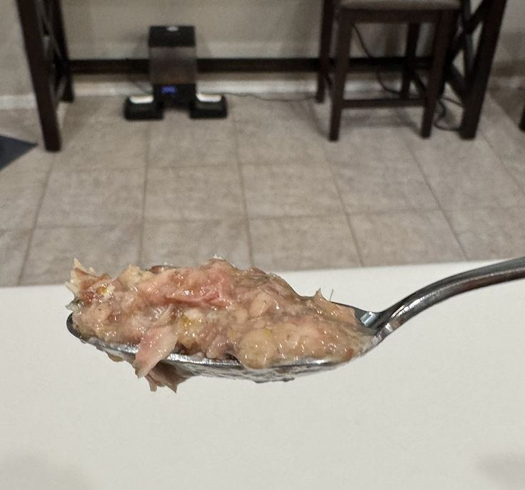
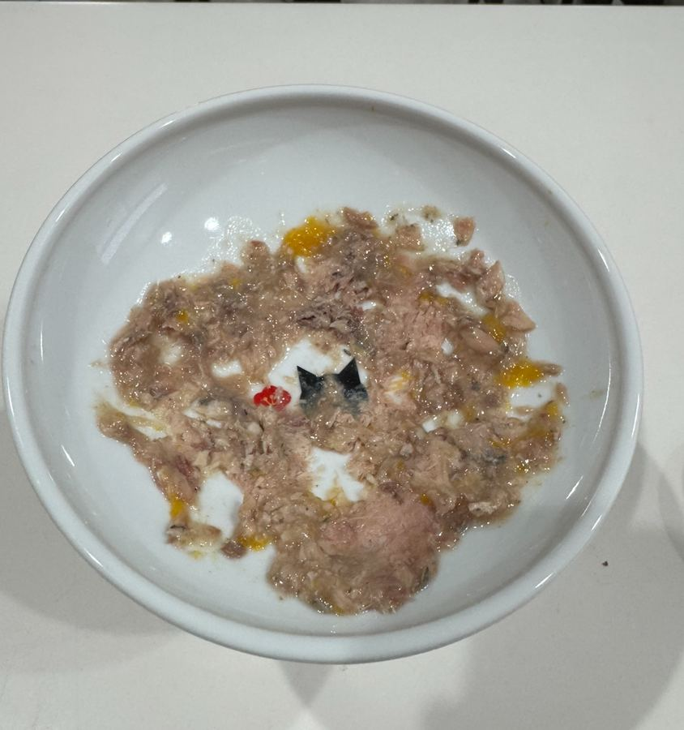
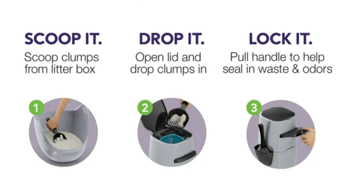

Cat Sitter Guide
Taking care of Luke & Leia
Thank you so much for looking after our cats! Start with the daily checklist below. The sections after it have the details.
Meet the Cats
Luke
Boy, solid grey
- Has no teeth, so his food must be broken into small pieces.
- A “scarf and barf” cat: eats too fast, then throws up.
- Sometimes sleeps through the auto feeder.
Leia
Grey with white
- A little chubby; we’re watching her weight.
- Will eat any food left lying around.
- Sometimes walks away from her bowl before she’s done.
Daily Checklist
Feeding
Auto Feeder (Kibble)
- Goes off every 3 hours during the day, starting at 6 AM. It skips 6 PM.
- Luke sometimes sleeps through it. If you hear it go off and he doesn’t show up, dump the kibble back into the feeder.
- Otherwise Leia will eat it. That’s not a disaster, but we’re trying to watch her weight.
Canned Food (Twice a Day)
- The open can is in the fridge with a blue reusable top. Extra cans are in the pantry.
- A new shipment of canned food arrives Wednesday.
- Each cat gets 2 spoons per meal (see the photo for what “1 spoon” looks like).
- Break both cats’ food into small pieces. Luke has no teeth, and he’ll eat Leia’s food too.
- Spread Luke’s food out across the bowl with the back of the spoon so he can’t scoop it all up at once. This keeps him from eating too fast and throwing up.


If Leia Doesn’t Finish
- Sometimes she walks away. If you bring the bowl to her, she’ll often finish it (but not always).
- Only a little left? Luke can have it.
- She left most of it? Throw it down the sink.
- Please don’t leave food lying around; Leia will eat it.
If Luke Begs Later
Right now: Luke’s throat seems a little sore.
- If he shows up later begging, give him 2 spoons of canned food (instead of kibble).
- Once his voice starts coming back, go back to the normal snack: 1 tablespoon of kibble.
- He may still be hungry after his canned food and come back for more. That’s okay: you can feed him again, just wait about 30–40 minutes first so he doesn’t throw up.
Bowls
- Wash the bowls right after they finish eating. They’re much easier to clean before the food dries.
Litter Boxes
- There are 2 boxes: one in the master bedroom and one in the master bath.
- Scoop at least twice a day: once in the morning and once in the evening.
- I usually also scoop once midday. If you miss it, that’s fine.
Using the Litter Disposal Can
There’s a special trash can next to the boxes. It stays sealed, so there’s no smell and you don’t need to take litter out to the outside trash.
- Lift the lid on the can.
- Scoop the litter box. Dig around a bit to get the bottom.
- Put the dirty litter on top of the little shelf.
- When you’re done, pull the shelf/handle to drop the litter into the bottom.
- Close the shelf, then close the lid.

Trash & Recycling
- Trash pickup is Friday. You can put the bin out Thursday night.
- Recycling pickup is Tuesday. You can put the bin out Monday night.
Contacts / Notes
Kyle:
Emergency contact:
Vet:
Other notes: